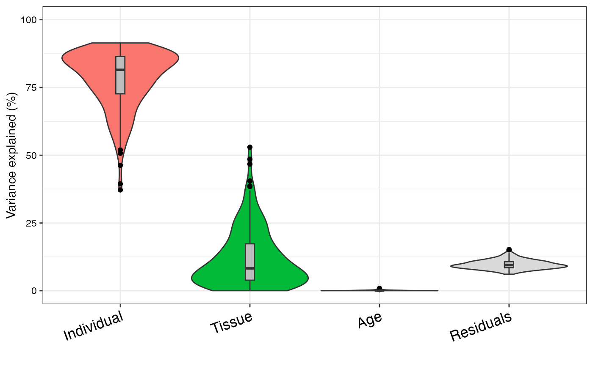

Fit linear (mixed) model, report variance fractions
Source:R/fitExtractVarPartModel.R
fitExtractVarPartModel-method.RdFit linear (mixed) model to estimate contribution of multiple sources of variation while simultaneously correcting for all other variables. Report fraction of variance attributable to each variable
Usage
fitExtractVarPartModel(
exprObj,
formula,
data,
REML = FALSE,
useWeights = TRUE,
control = vpcontrol,
hideErrorsInBackend = FALSE,
showWarnings = TRUE,
BPPARAM = SerialParam(),
...
)
# S4 method for matrix
fitExtractVarPartModel(
exprObj,
formula,
data,
REML = FALSE,
useWeights = TRUE,
control = vpcontrol,
hideErrorsInBackend = FALSE,
showWarnings = TRUE,
BPPARAM = SerialParam(),
...
)
# S4 method for data.frame
fitExtractVarPartModel(
exprObj,
formula,
data,
REML = FALSE,
useWeights = TRUE,
control = vpcontrol,
hideErrorsInBackend = FALSE,
showWarnings = TRUE,
BPPARAM = SerialParam(),
...
)
# S4 method for EList
fitExtractVarPartModel(
exprObj,
formula,
data,
REML = FALSE,
useWeights = TRUE,
control = vpcontrol,
hideErrorsInBackend = FALSE,
showWarnings = TRUE,
BPPARAM = SerialParam(),
...
)
# S4 method for ExpressionSet
fitExtractVarPartModel(
exprObj,
formula,
data,
REML = FALSE,
useWeights = TRUE,
control = vpcontrol,
hideErrorsInBackend = FALSE,
showWarnings = TRUE,
BPPARAM = SerialParam(),
...
)
# S4 method for sparseMatrix
fitExtractVarPartModel(
exprObj,
formula,
data,
REML = FALSE,
useWeights = TRUE,
control = vpcontrol,
hideErrorsInBackend = FALSE,
showWarnings = TRUE,
BPPARAM = SerialParam(),
...
)Arguments
- exprObj
matrix of expression data (g genes x n samples), or
ExpressionSet, orEListreturned byvoom()from thelimmapackage- formula
specifies variables for the linear (mixed) model. Must only specify covariates, since the rows of exprObj are automatically used as a response. e.g.:
~ a + b + (1|c)- data
data.framewith columns corresponding to formula- REML
use restricted maximum likelihood to fit linear mixed model. default is FALSE. See Details.
- useWeights
if TRUE, analysis uses heteroskedastic error estimates from
voom(). Value is ignored unless exprObj is anEList()fromvoom()orweightsMatrixis specified- control
control settings for
lmer()- hideErrorsInBackend
default FALSE. If TRUE, hide errors in
attr(.,"errors")andattr(.,"error.initial")- showWarnings
default TRUE. Indicate model failures
- BPPARAM
parameters for parallel evaluation
- ...
Details
A linear (mixed) model is fit for each gene in exprObj, using formula to specify variables in the regression. If categorical variables are modeled as random effects (as is recommended), then a linear mixed model us used. For example if formula is ~ a + b + (1|c), then the model is
fit <- lmer( exprObj[j,] ~ a + b + (1|c), data=data)
If there are no random effects, so formula is ~ a + b + c, a 'standard' linear model is used:
fit <- lm( exprObj[j,] ~ a + b + c, data=data)
In both cases, useWeights=TRUE causes weightsMatrix[j,] to be included as weights in the regression model.
Note: Fitting the model for 20,000 genes can be computationally intensive. To accelerate computation, models can be fit in parallel using BiocParallel to run in parallel. Parallel processing must be enabled before calling this function. See below.
The regression model is fit for each gene separately. Samples with missing values in either gene expression or metadata are omitted by the underlying call to lm/lmer.
REML=FALSE uses maximum likelihood to estimate variance fractions. This approach produced unbiased estimates, while REML=TRUE can show substantial bias. See Vignette "3) Theory and practice of random effects and REML"
Examples
# load library
# library(variancePartition)
library(BiocParallel)
# load simulated data:
# geneExpr: matrix of gene expression values
# info: information/metadata about each sample
data(varPartData)
# Specify variables to consider
# Age is continuous so we model it as a fixed effect
# Individual and Tissue are both categorical, so we model them as random effects
form <- ~ Age + (1 | Individual) + (1 | Tissue)
# Step 1: fit linear mixed model on gene expression
# If categorical variables are specified, a linear mixed model is used
# If all variables are modeled as continuous, a linear model is used
# each entry in results is a regression model fit on a single gene
# Step 2: extract variance fractions from each model fit
# for each gene, returns fraction of variation attributable to each variable
# Interpretation: the variance explained by each variable
# after correction for all other variables
varPart <- fitExtractVarPartModel(geneExpr, form, info)
# violin plot of contribution of each variable to total variance
plotVarPart(sortCols(varPart))

# Note: fitExtractVarPartModel also accepts ExpressionSet
data(sample.ExpressionSet, package = "Biobase")
# ExpressionSet example
form <- ~ (1 | sex) + (1 | type) + score
info2 <- Biobase::pData(sample.ExpressionSet)
varPart2 <- fitExtractVarPartModel(sample.ExpressionSet, form, info2)